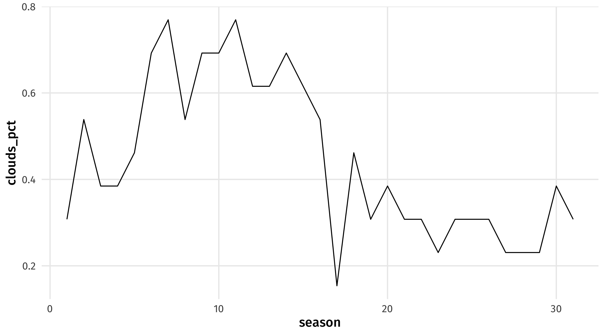
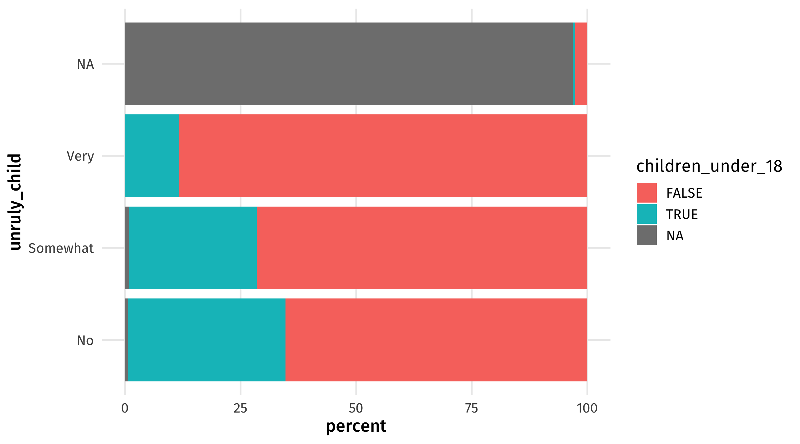
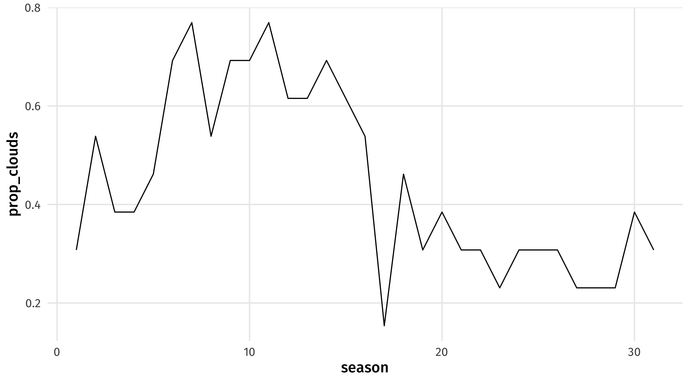
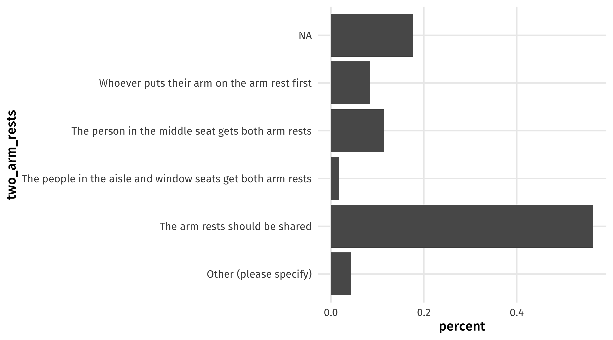

# libraries
library(tidyverse)
library(nycflights13)
library(fivethirtyeight)
library(juanr)Relationships
In-class example
In-class example
Here’s the code we’ll be using in class:
- Day one: 👩💻 04-summarize.R
- Day one: 👩💻 05-summarize.R
Instructions:
Download it and store it with the rest of your materials for this course. If simply clicking doesn’t trigger download, you should right-click and select “save link as…”.
Upload to Posit Cloud
Summarize
Let’s load the libraries.
Class: trade
IGOS in 1960:
trade |>
filter(year == 1960) |>
summarise(med_igos = median(sum_igos))# A tibble: 1 × 1
med_igos
<dbl>
1 33IGOS in 1960:
trade |>
filter(year == 2010) |>
summarise(med_igos = median(sum_igos))# A tibble: 1 × 1
med_igos
<dbl>
1 66At least one sea border:
trade |>
filter(year == 2010, sea_borders >= 1) |>
summarise(mean_exports = mean(exports, na.rm = TRUE))# A tibble: 1 × 1
mean_exports
<dbl>
1 105389.No sea border:
trade |>
filter(year == 2010, sea_borders >= 1) |>
summarise(mean_exports = mean(exports, na.rm = TRUE))# A tibble: 1 × 1
mean_exports
<dbl>
1 105389.Most exports:
trade |>
filter(year == 2012) |>
filter(exports == max(exports, na.rm = TRUE))# A tibble: 1 × 10
country year imports exports gdp pop land_borders sea_borders
<chr> <dbl> <dbl> <dbl> <dbl> <dbl> <dbl> <dbl>
1 China 2012 2331123. 2494240. 1.79e13 1310926531. 14 4
# ℹ 2 more variables: min_cap_dist <dbl>, sum_igos <dbl>Class: feeling thermometer
Attitudes towards the police, comparing Democrats and Republicans:
therm |>
filter(party_id == "Democrat" | party_id == "Republican") %>%
group_by(party_id) |>
summarise(ft_police = mean(ft_police, na.rm = TRUE))# A tibble: 2 × 2
party_id ft_police
<fct> <dbl>
1 Democrat 67.8
2 Republican 87.6Class: bob_ross
How likely to include a tree?
library(fivethirtyeight)
bob_ross |>
summarise(tree_pct = mean(tree, na.rm = TRUE))# A tibble: 1 × 1
tree_pct
<dbl>
1 0.896Frequency of clouds over seasons?
clouds_season = bob_ross |>
group_by(season) |>
summarise(clouds_pct = mean(clouds, na.rm = TRUE))
ggplot(clouds_season, aes(x = season, y = clouds_pct)) + geom_line()
If there is a mountain in a Bob Ross painting, how likely is it that mountain is snowy (snowy_mountain)?
bob_ross |>
filter(mountain == 1) |>
summarise(snowy_pct = mean(snowy_mountain, na.rm = TRUE))# A tibble: 1 × 1
snowy_pct
<dbl>
1 0.681class: flying etiquette
In a row of three seats, who should get to use the middle arm rest (two_arm_rests)? Make a barplot of the percent of respondents who gave each answer.
arms = flying |>
group_by(two_arm_rests) |>
tally() |>
mutate(percent = n / sum(n) * 100)
ggplot(arms, aes(y = two_arm_rests, x = percent)) + geom_col()In general, is it rude to knowingly bring unruly children on a plane? Make a barplot of the percent who gave each answer, but separated by whether the respondent has a kid or not.
child = flying |>
group_by(unruly_child, children_under_18) |>
tally() |>
mutate(percent = n / sum(n) * 100)
ggplot(child, aes(y = unruly_child, x = percent,
fill = children_under_18)) + geom_col()
The Bob Ross example
Happy tree?
bob_ross %>%
summarise(prop_tree = mean(tree, na.rm = TRUE))# A tibble: 1 × 1
prop_tree
<dbl>
1 0.896Clouds over time?
bob_clouds = bob_ross %>%
group_by(season) %>%
summarise(prop_clouds = mean(clouds, na.rm = TRUE))
ggplot(bob_clouds, aes(x = season, y = prop_clouds)) + geom_line()
snowy mountain?
bob_ross %>%
filter(mountain == 1) %>%
summarise(snowiness = mean(snowy_mountain, na.rm = TRUE))# A tibble: 1 × 1
snowiness
<dbl>
1 0.681bob_ross %>%
group_by(mountain) %>%
summarise(snowiness = mean(snowy_mountain, na.rm = TRUE))# A tibble: 2 × 2
mountain snowiness
<int> <dbl>
1 0 0
2 1 0.681Steve ross?
bob_ross %>%
group_by(steve_ross) %>%
summarise(lake_chance = mean(lake, na.rm = TRUE))# A tibble: 2 × 2
steve_ross lake_chance
<int> <dbl>
1 0 0.339
2 1 0.909The flying etiquette example
Middle arm rest?
middle_arm_rests = flying %>%
count(two_arm_rests) %>%
mutate(percent = n/sum(n))
ggplot(middle_arm_rests, aes(x = percent, y = two_arm_rests)) +
geom_col()